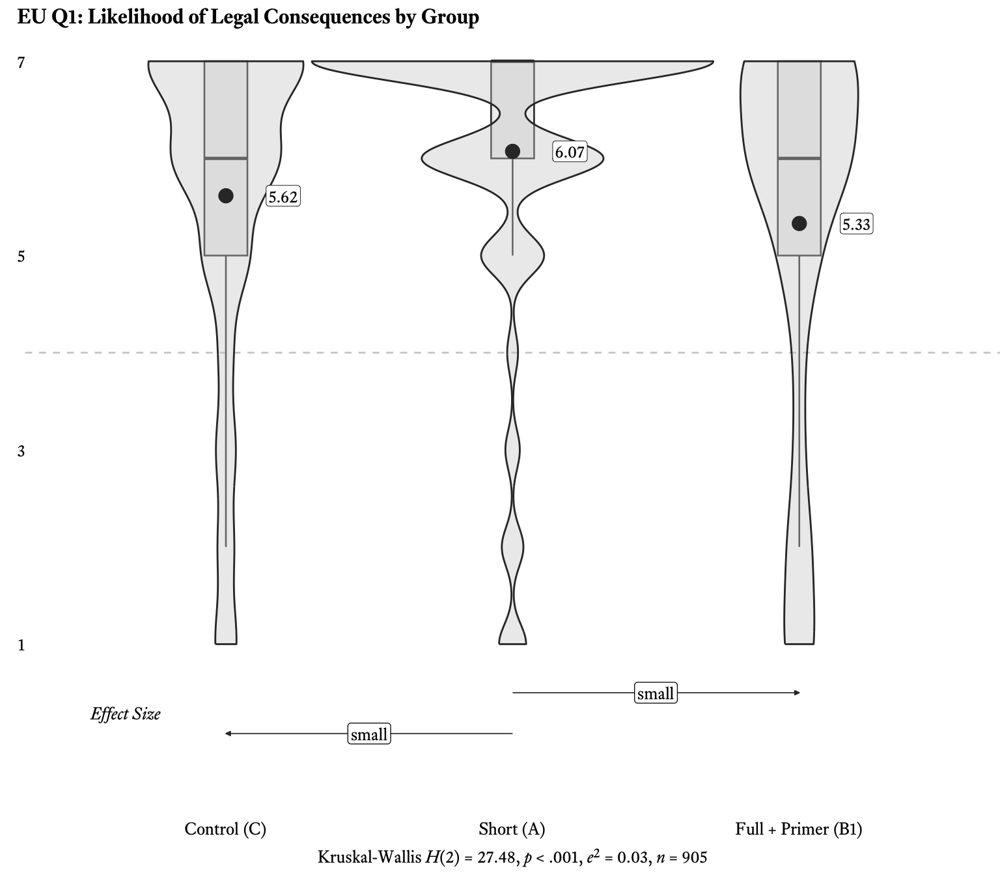
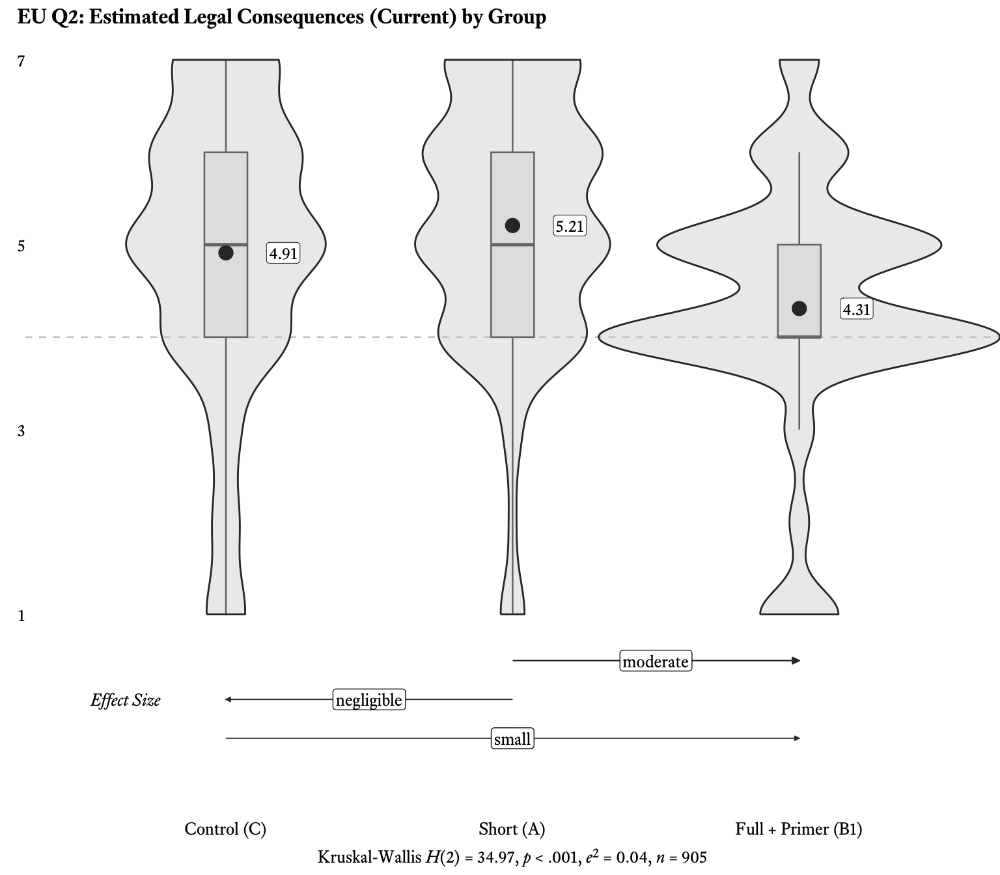
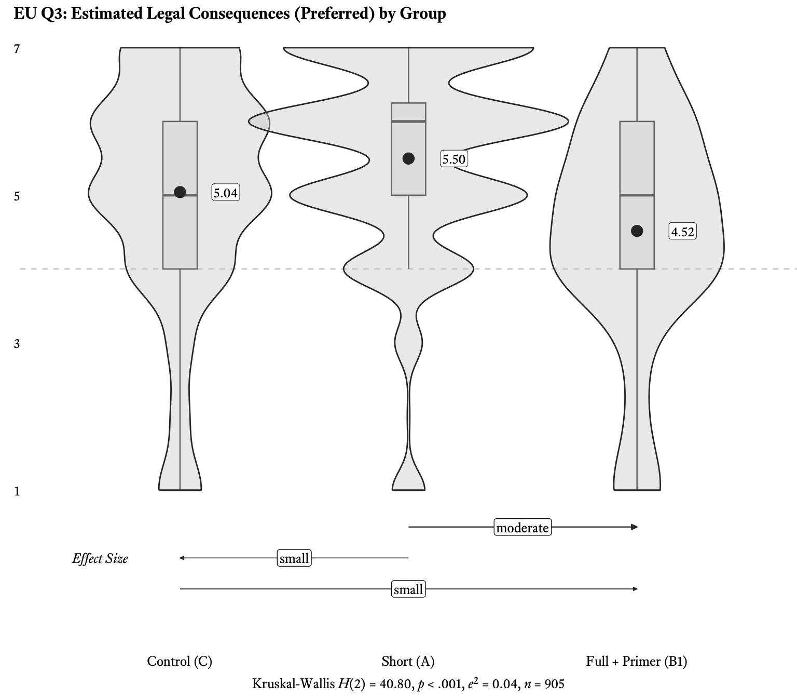
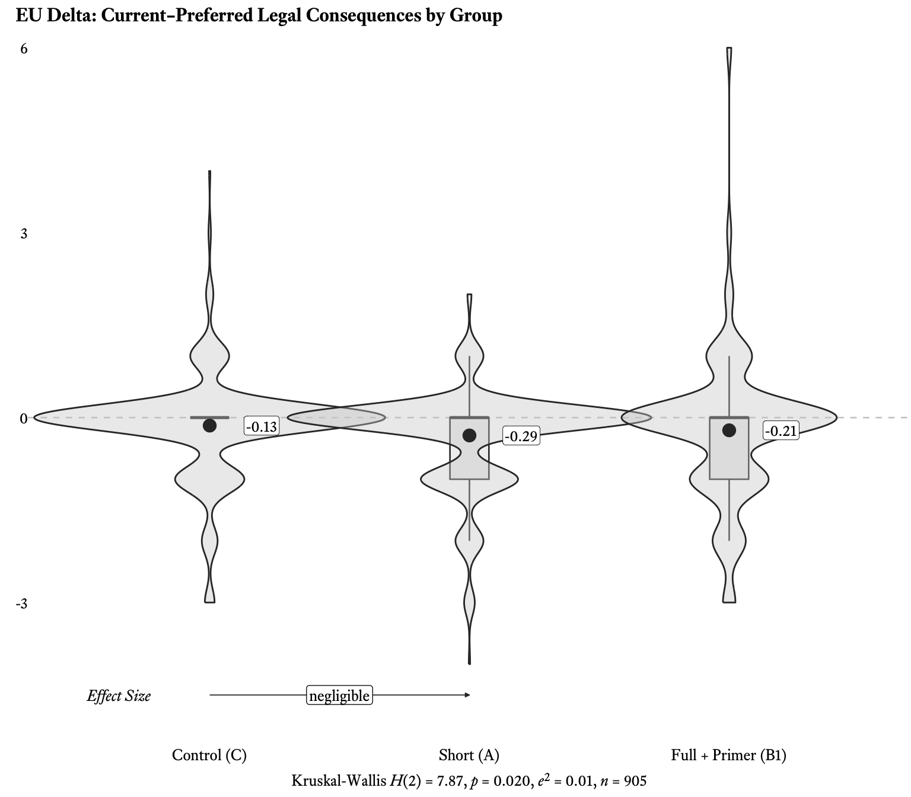
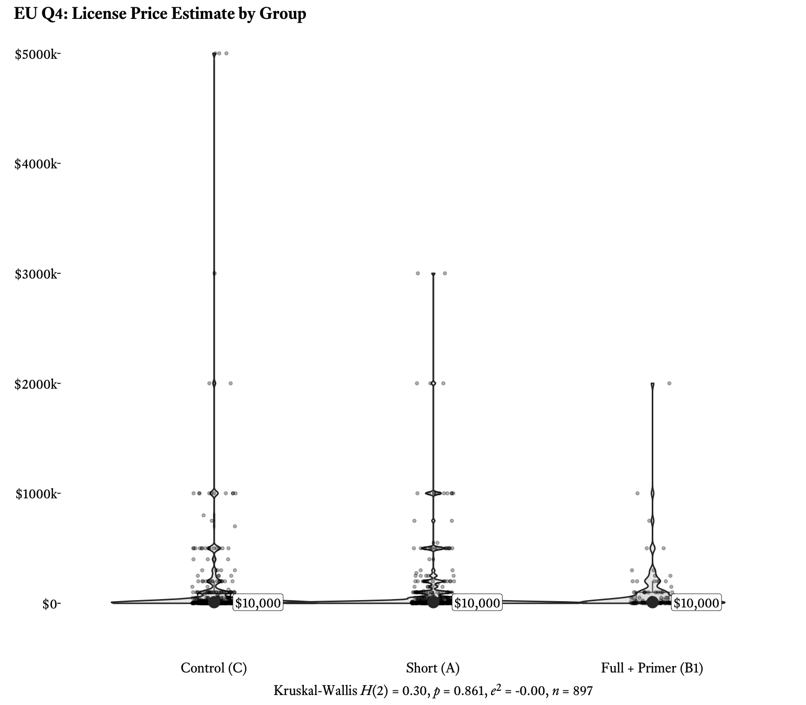

| Group | Mean | Std. Dev. | Median |
|---|---|---|---|
| Control (C) | 5.62 | 1.76 | 6 |
| Short (A) | 6.07 (+8.0%) | 1.52 | 7 |
| Full + Primer (B1) | 5.33 (−5.2%) | 1.98 | 6 |
7.3 Educational Use
WarningData Note — B1 Group Substitution
This scenario uses a different group filter than the other six scenarios. Group B was replaced by Group B1 — a supplemental collection of 97 participants — due to a data quality issue in the original Group B data for this scenario. The analysis filters to Groups A, B1, and C (n = 905), excluding Group B entirely.
See Section 2.1 (Codebook) for full documentation of the B1 substitution.
7.3.0 Scenario Presentation
Respondents saw the following scenario. Because this scenario involves a book rather than an image, the instrument is text-only — no image was displayed. Only the caption beneath the book title varied across conditions.
Pretty Pink Piggies © 2018 S. Baker. All Rights Reserved.
Pretty Pink Piggies © 2018 by S. Baker is licensed under CC BY-NC-SA 4.0
Full + Primer (B1) respondents first reviewed a CC Education page explaining all six Creative Commons license types and the CC0 Public Domain Dedication before seeing this scenario.
Pretty Pink Piggies © 2018 by S. Baker is licensed under Creative Commons Attribution-NonCommercial-ShareAlike 4.0 International
In your opinion, how likely is the publishing company to face legal consequences for this use?
7-point scale: 1 “Extremely unlikely” to 7 “Extremely likely”
In your opinion, if the publishing company were sued for these actions, what legal consequences do you think it would face?
7-point scale: 1 “No consequences” — 4 “Some negative consequences, such as a court order to stop and/or a moderate fine” — 7 “Very negative consequences, such as incarceration and/or a large fine”
In your opinion, what legal consequences should the publishing company face for these actions?
7-point scale: 1 “No consequences” — 4 “Some negative consequences, such as a court order to stop and/or a moderate fine” — 7 “Very negative consequences, such as incarceration and/or a large fine”
Now imagine that before the use described above, the publishing company and the owner of this work agreed on a price for a non-exclusive license. In your opinion, what do you think would be a reasonable price for that license?
Open response in US dollars
NoteScenario Context
Legal Context: This is a divergent scenario — the legal outcome changes across conditions. Under the Control’s standard copyright notice, unauthorized mass reproduction and sale is straightforward infringement. Under the treatment conditions’ CC BY-NC-SA 4.0 license, however, the analysis turns on the meaning of “NonCommercial.” The CC BY-NC-SA 4.0 license permits reproduction and redistribution for non-commercial purposes. Educational distribution to schools — even at scale — can fall within the license’s permissions if the use is primarily educational rather than commercial. This ambiguity is precisely the issue litigated in Great Minds v. FedEx Office & Print Services (2019), where the Second Circuit held that the NonCommercial clause focuses on the nature of the use, not the identity of the user. Under that reasoning, a for-profit publisher distributing educational materials to schools could be engaged in a non-commercial use.
Expected Pattern: Strong treatment effect with the pre-registered ordering C > A > B. Treatment respondents should perceive substantially lower risk than the Control, since the CC license signals permission for educational reuse. Full + Primer (B1) (full-text license + educational primer) should show the strongest reduction.
Design Note: The scenario describes mass commercial reproduction and sale of a children’s book to schools. The “NonCommercial” element of the CC BY-NC-SA 4.0 license creates legal ambiguity: respondents must weigh whether distributing educational materials to schools for profit is a “commercial” or “non-commercial” use. This tension between commercial scale and educational purpose is central to the scenario’s design.
7.3.1 Q1: Educational Use Risk Perception
Do CC license symbols reduce perceived risk for educational use?
* p < .05, ** p < .01, *** p < .001
| Comparison | P(1st > 2nd) | Effect Size | Sig. |
|---|---|---|---|
| C > A | 46.2% | negligible | n.s. |
| C > B | 37.8% | small | *** |
| A > B | 41.5% | small | *** |
* p < .05, ** p < .01, *** p < .001
n.s. = not significant

Educational Use is one of two divergent scenarios in the study (alongside Filesharing): the depicted use is infringing under the Control’s standard copyright but non-infringing under the treatment conditions’ CC BY-NC-SA 4.0 license. This divergence makes EU a strong test of treatment effects — well-informed respondents in the treatment groups should recognize that the CC license permits the described educational distribution and perceive substantially lower legal risk than those in the Control.
The results confound the prediction. Instead of the pre-registered C > A > B ordering, Q1 produces A > C > B1: Short (A) respondents perceive the highest likelihood of legal consequences (M = 6.07, SD = 1.52), significantly above both the Control (M = 5.62, SD = 1.76) and Full + Primer (B1) (M = 5.33, SD = 1.98). The Kruskal-Wallis test is highly significant (\(\chi^2\)(2) = 27.48, p = < .001). Dunn’s post-hoc tests (Holm-adjusted) reveal that the C–A (p < .001) and A–B1 (p < .001) comparisons are significant, while the C–B1 comparison does not reach significance. Pairwise VDA effect sizes are reported in Table 2.
The counterintuitive finding is that the CC symbol — without accompanying explanation — appears to increase perceived risk rather than reduce it. Only Full + Primer (B1) respondents, who read the full-text license and educational primer, show the lowest risk perception, consistent with more detailed information helping respondents recognize the permissions the CC license grants.
7.3.2 Q2: Perceived Legal Consequences Under Current Law
What consequences do respondents believe would follow from unauthorized educational reprinting?
| Group | Mean | Std. Dev. | Median |
|---|---|---|---|
| Control (C) | 4.91 | 1.58 | 5 |
| Short (A) | 5.21 (+6.1%) | 1.39 | 5 |
| Full + Primer (B1) | 4.31 (−12.2%) | 1.36 | 4 |
* p < .05, ** p < .01, *** p < .001
| Comparison | P(1st > 2nd) | Effect Size | Sig. |
|---|---|---|---|
| C > A | 36.1% | small | *** |
| C > B | 31.0% | moderate | *** |
| A > B | 45.3% | negligible | * |
* p < .05, ** p < .01, *** p < .001
n.s. = not significant

Q2 asks what consequences respondents believe would follow under current law — setting aside the likelihood question to focus on severity. The A > C > B1 pattern holds with all three pairwise comparisons reaching significance (\(\chi^2\)(2) = 34.97, p = < .001). Short (A) perceives the harshest consequences (M = 5.21, SD = 1.39), followed by Control (M = 4.91, SD = 1.58), with Full + Primer (B1) perceiving the mildest (M = 4.31, SD = 1.36). Pairwise VDA effect sizes are reported in Table 4. The pattern is clear: the full-text license communicates permissiveness in a way that the abbreviated CC symbol does not. Respondents shown only “CC BY-NC-SA 4.0” appear to register the presence of a formal licensing regime — reinforcing the sense that the use is governed by legal rules — without absorbing the specific permissions that regime grants.
7.3.3 Q3: Normative Preferences
What consequences do respondents believe should follow for educational use? Normative views on educational fair use.
| Group | Mean | Std. Dev. | Median |
|---|---|---|---|
| Control (C) | 5.04 | 1.61 | 5 |
| Short (A) | 5.50 (+9.1%) | 1.36 | 6 |
| Full + Primer (B1) | 4.52 (−10.3%) | 1.60 | 5 |
* p < .05, ** p < .01, *** p < .001
| Comparison | P(1st > 2nd) | Effect Size | Sig. |
|---|---|---|---|
| C > A | 39.2% | small | *** |
| C > B | 31.1% | moderate | *** |
| A > B | 41.9% | small | *** |
* p < .05, ** p < .01, *** p < .001
n.s. = not significant

Q3 shifts from descriptive to normative: not what consequences would follow, but what should follow. This question produces the strongest between-group effect in the EU scenario (\(\chi^2\)(2) = 40.80, p = < .001 — the largest effect size across Q1–Q3). All three pairwise comparisons are significant (see Table 6).
Short (A) respondents wanted more consequences (M = 5.50, SD = 1.36) than the Control (M = 5.04, SD = 1.61) — the CC symbol paradoxically heightened the perceived wrongfulness of the use. Full + Primer (B1) respondents, who read the full license text, wanted the least severe consequences (M = 4.52, SD = 1.60), but their mean still falls above the scale midpoint. The pattern is consistent: mass commercial reproduction of a children’s book is viewed unfavorably regardless of licensing condition, but the abbreviated CC mark makes it feel worse while the full-text license tempers the judgment.
7.3.4 Delta (Q2 - Q3): Law–Preference Gap
Is there a gap between what respondents believe the law says (Q2) and what they believe it should say (Q3)?
Delta = Q2 - Q3. Positive values indicate the law is perceived as stricter than preferred; negative values indicate the law is perceived as more lenient than preferred; zero indicates alignment.
| Group | Mean | Std. Dev. | Median |
|---|---|---|---|
| Control (C) | -0.13 | 0.81 | 0 |
| Short (A) | -0.29 (−123.1%) | 0.78 | 0 |
| Full + Primer (B1) | -0.21 (−61.5%) | 1.20 | 0 |
* p < .05, ** p < .01, *** p < .001
| Comparison | P(1st > 2nd) | Effect Size | Sig. |
|---|---|---|---|
| C > A | 46.7% | negligible | n.s. |
| C > B | 50.9% | negligible | n.s. |
| A > B | 54.7% | negligible | * |
* p < .05, ** p < .01, *** p < .001
n.s. = not significant

All three group deltas are negative: Short (A) (-0.29), Full + Primer (B1) (-0.21), and Control (C) (-0.13). Respondents across all conditions believe the law should impose greater consequences for this use than it currently does — the opposite direction from most scenarios, where deltas tend positive (law perceived as too strict). The between-group Kruskal-Wallis test is significant (\(\chi^2\)(2) = 7.87, p = 0.020), but only the C–A pairwise comparison reaches significance (see Table 8). Short (A) respondents show the largest gap between perceived and preferred consequences, consistent with the pattern across Q1–Q3 in which the abbreviated CC symbol heightens the sense of transgression. The small effect size and limited pairwise significance suggest that, while the direction of the law-preference gap is consistent across groups, the magnitude of that gap is not strongly differentiated by treatment condition — all groups want more consequences, and the CC license manipulations do not dramatically change how much more.
| Group | V | Non-Zero | Dir. | Sig. |
|---|---|---|---|---|
| Control (C) | 2380 | Yes | − | *** |
| Short (A) | 1317 | Yes | − | *** |
| Full + Primer (B1) | 329 | Yes | − | * |
* p < .05, ** p < .01, *** p < .001
n.s. = not significant
All three groups’ deltas differ significantly from zero. Short (A) shows the strongest gap, indicating that Short (A) respondents systematically want consequences increased by roughly one full scale point. Control (C) and Full + Primer (B1) both show significant but smaller gaps. That even the full-text license group wants more consequences suggests that the educational reprinting described in this scenario — 200,000 copies sold commercially — strikes respondents as sufficiently exploitative that no amount of licensing information fully assuages their concern. The negative deltas across all conditions stand in sharp contrast to most other scenarios, where respondents perceive the law as too strict. For Educational Use, the combination of mass commercial reproduction and sale to schools triggers a punitive impulse that the CC license — even in its most informative B1 form — cannot fully overcome.
7.3.5 Q4: Educational License Pricing
What do respondents estimate a non-exclusive educational license would cost?
| Group | Mean | Std. Dev. | Median |
|---|---|---|---|
| Control (C) | 143999.97 | 511858.70 | 10000 |
| Short (A) | 117379.89 (−18.5%) | 329920.58 | 10000 |
| Full + Primer (B1) | 94028.83 (−34.7%) | 249532.21 | 10000 |
* p < .05, ** p < .01, *** p < .001
| Comparison | P(1st > 2nd) | Effect Size | Sig. |
|---|---|---|---|
| C > A | 50.5% | negligible | n.s. |
| C > B | 49.5% | negligible | n.s. |
| A > B | 48.9% | negligible | n.s. |
* p < .05, ** p < .01, *** p < .001
n.s. = not significant

The Kruskal-Wallis test reveals no significant between-group differences in license price estimates (\(\chi^2\)(2) = 0.30, p = 0.861). All three group medians converge at $10,000, even as the means spread widely — Control ($144,000), Short (A) ($117,380), and Full + Primer (B1) ($94,029) — driven by extreme right skew from outlier responses. VDA values hover near 0.50 across all pairwise comparisons, confirming the absence of any dominance pattern (see Table 11).
The null result on pricing is noteworthy given the strong treatment effects observed on Q1–Q3. CC license exposure significantly shifts risk perception, perceived consequences, and normative preferences — yet it does not affect respondents’ estimates of the economic value of the use itself. This dissociation suggests that respondents anchor their price estimates on the scale of the described use (200,000 copies sold to schools for profit) rather than on the licensing condition. The commercial magnitude of the transaction dominates respondents’ economic intuition, overriding whatever signaling effect the CC license exerts on perceptions of legal risk and wrongfulness. This pattern is consistent with the broader finding across scenarios that pricing is the question least sensitive to the treatment manipulation.
7.3.6 Summary
TipKey Findings — Educational Use
Educational Use is a divergent scenario: the depicted use — a commercial publisher reprinting a children’s book and selling 200,000 copies to schools — is infringing under the Control’s standard copyright notice but non-infringing under the treatment conditions’ CC BY-NC-SA 4.0 license. This makes EU one of the study’s strongest tests of treatment effects.
Reversed ordering: A > C > B1. Instead of the pre-registered C > A > B pattern, all four ordinal questions produce A > C > B1. Short (A) respondents perceive the highest risk and want the most consequences; Full + Primer (B1) respondents perceive the lowest risk. The abbreviated CC symbol paradoxically heightens perceived transgression rather than signaling permission.
CC symbol paradox. Respondents shown only “CC BY-NC-SA 4.0” appear to register the presence of a formal licensing regime — reinforcing the sense that the use is governed by legal rules — without absorbing the specific permissions that regime grants. The CC mark makes unauthorized commercial reproduction feel more wrongful, not less.
Full + Primer (B1) education effect. Only Full + Primer (B1) respondents, who read the full-text license and educational primer, show reduced risk perception consistent with the license’s actual permissions. The full-text explanation communicates permissiveness in a way the abbreviated symbol does not, but even Full + Primer (B1) means remain above the scale midpoint across Q1–Q3.
Negative deltas — respondents want MORE consequences. All three group deltas are negative, meaning respondents believe the law should impose greater consequences than it currently does. This is the opposite direction from most scenarios. The combination of mass commercial reproduction and sale to schools triggers a punitive impulse that no amount of licensing information fully overcomes.
Null price result. No significant between-group differences in license price estimates (\(\chi^2\)(2) = 0.30, p = 0.861). Respondents anchor on the commercial scale of the use (200,000 copies), not the licensing condition — pricing is the question least sensitive to the treatment manipulation.
B1 sample size caveat. The EU scenario uses Group B1 (n = 97) rather than the original Group B (n = 414). B1 participants completed only the EU scenario, and the smaller sample size reduces statistical power for detecting effects in the B1 condition. Results involving B1 should be interpreted with this limitation in mind.